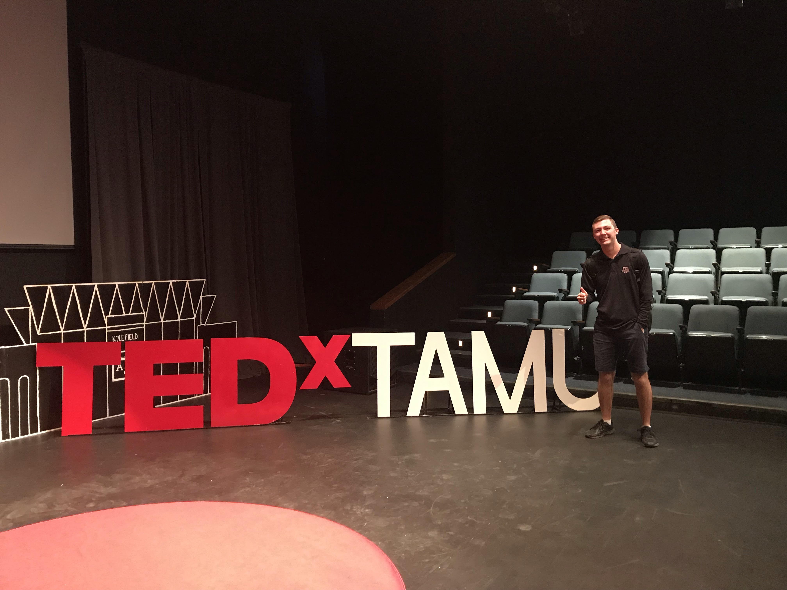
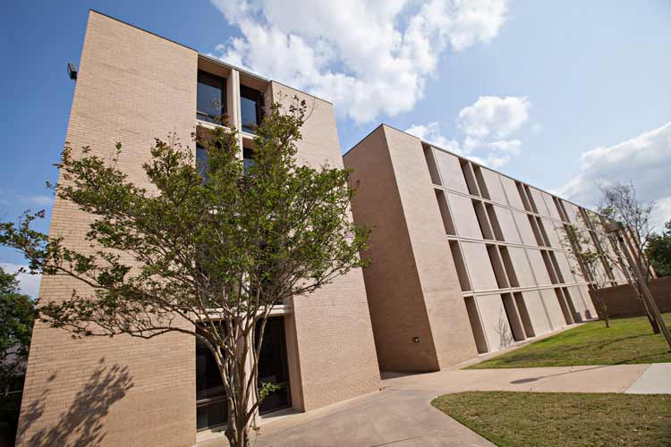

University Honors
Honors Events
Each semester, I participate in academic and social events to get to know other University Honors students, just learn something new, or both! For example, I attended TEDxTAMU in Spring 2019 and learned a lot about flags, diversity, and art that I perhaps wouldn't have learned about otherwise! My reflections are below.
TEDxTAMU was my first TED talk experience to attend, and I am so glad that I did. Following the theme of "different backgrounds blending together to create something beautiful," I heard from four excellent speakers who stimulated me to appreciate and think differently about diversity among my peers. One of my favorite things I get to take away from University Honors events and professional events such as these is that I get to learn from outstanding individuals outside my field of study, such as these four speakers, and learn to appreciate something I would never have otherwise given a second thought. As someone who studies computation and sciences, the topics discussed on Sunday, such as law, flag design, and expression through art, were fairly foreign to me, but the speakers managed to show me four different they use their unique background to make a positive impact in the world through their powerful stories and stage presence. As Bin Mai explained, the next phase of digital information is human-centric, meaning that someday soon, we will rely on masters of human expression to help keep our information secure. I learned from LeAnn Hale that art education can be powerful a powerful tool in a child's life, and Michael Green taught me that even the simplest forms of symbolism can unify nations of people or start wars. Tiana Stanford told a powerful story of how she inspired the people of her community just by pursuing her authentic self. As someone who studies problem solving and engineering, it is easy to get caught up in the competition in the community to be the best at what I do, but as I was reminded on Sunday, creativity gives life meaning, and with the courage to pursue authenticity, I can unlock my creative potential. Driving home from the event, I was excited to explore how I could use my individuality to come together with my community and make the world a more gradient place.
ePortfolio
One requirement of University Honors is to keep up with an online portfolio of some of my life's work. As a developer, I keep most of my personal projects on Github. But on this page, I hope to showcase some of the major accomplishments I have had in areas outside my coding life.
This is one of the many things I decided to make a project out of, so I began working on this a few years ago by just learning to make basic HTML and CSS. Then after my internship at Lockheed Martin, I learned a little more about web programming and learned to use Bootstrap and JavaScript, so I developed a cleaner and more flexible style and navigation bar myself. Any criticisms are welcome on how I can improve either the content or style of this page.
Honors Courses
One of the major advantages of University Honors is the ability to register early for honors courses with other honors students. I like to register for these classes because I get a better insight into whatever topic I'm exploring, and with such a small class size, the professor can more easily focus on the needs of the class and give students more individual attention. Small class sizes of motivated, excelling students also provides a more collaborative atmosphere of learning. To learn more about specific honors classes I've taken, see Coursework.
Senior Capstone
One of the objectives I will complete as a University Honors student is to complete a senior capstone project. I will be performing research with the Undergraduate Research Scholars Program in Fall 2019 and Spring 2020, so my thesis and research project will serve as my senior capstone. To read more, see Research.
On-Campus Living
As a part of the University Honors Program, I lived on campus for my freshman year (Aug 2016-May 2017) with other University Honors Students. This gave me the unique opportunity to make friends through classes and campus events with people across Texas A&M that I might not have otherwise gotten to know. Each week of my freshman year, I met with a group of people called my "honors family" and spent time reflecting on how I could make the best of my Texas A&M education. One such reflection is my personal statement below.
Personal Statement
I wrote this statement my freshman year as a way to bridge my education from what I have learned to what I want to apply it to. Obviously, many of my perspectives have changed since I wrote this, but it serves as a good reflection of how much my outlook on my education has changed since coming to Texas A&M University. My idea of a "life well lived" has not changed, although I wish I had put it into better words when I was a freshman. I seek to use my skills to improve the world around me for the benefit of as many others as I can. I am still inspired by Alan Turing's bravery and global timeless impact, but now that I have chosen to go into a more technical, niche field, I have learned that my impact may not be through the engineering challenges spefically called out by the NAE.
To me, a “life well-lived” is one in which an individual does their best to improve the world around them for the benefit of all whom they interact with. Since the dawn of humans, as I have learned through anthropology, a class that stretched me to learn about something I might not have been comfortable with before, humans have always depended on one another. We cannot live among one another without constantly wanting to love, help, guard, follow, and interact with others. Because of this instinct for interactions, we constantly want to discover new things about the world that we can use to make ourselves and others more comfortable, and if we have lived a “life well-lived”, we have made an impact on how future generations will push themselves to make life better for others. I say this because one of the most fulfilling feelings is doing something to improve your own life, but a more fulfilling feeling comes from providing others with a better way to live their lives. Like I mentioned, anthropology has taught me that all life depends on one another, and I am sure that back when few intelligent humans roamed the Earth, they could fulfill their own lives living in their own bubble, but now that we have evolved to communicate with one another, challenges of living on this planet fall on our shoulders. Only together can we hope to achieve a better understanding of these problems and solve them. This is the essence of why I want to study Computer Science. Ever since Alan Turing put together his machine in the early stages of computational thought, computer scientists around the world have been trying to solve the same problems of using algorithmic thinking to enhance the ability of computers in aiding humans to help one another. I know that sounds like just a runoff sentence meant to dance around the answer, but it really is the truth. Computers can perform massive amounts of calculations that our brains, even the largest ones on Earth, cannot. So now that we have these powerful tools, we can do all sorts of things to interact with other disciplines and enhance the way the world lives. Almost everything can be coded, and everyone uses dozens of computers every day to perform many day-to-day operations, such as driving or the laundry. But now, as we face huge issues as a population, such as climate change or overpopulation, or energy shortages, we need scientists that can enhance technology to fill as many computational needs as possible so that we can quickly find answers to the questions that regard the future of our species and the future of our population as we know it. In my Bridge Essay, I wrote about Virtual Reality and its impact on the world around me. Now, I believe that the research I have performed has made an impact on how I view the industry of engineering and how I plan my future as far as making plans to accomplish my goals. I plan to continue pursuing the area of virtual reality, as it is set out by the National Engineering Academy as one of the largest challenges faced by engineers of our time (the twenty first century). I believe that if I can make an impact in this area while I am attending college at Texas A&M University, I can have the experience necessary to make advancements in other interesting areas of study in the future after I graduate. If I truly do live a fulfilling life, I will have chosen another one of the areas of the broad study of engineering and studied it deeply as a good engineer would do and have made an impact in that area. There are 12 other Engineering Challenges that are left to pursue, and I plan to pursue at least a few, if not all, before my career is over. I, as a programmer armed with my experience performing research at Texas A&M University, will be ready when I join the workforce to make an impact in the area of my choice.
The rest of my writing for the class can be found at this link.